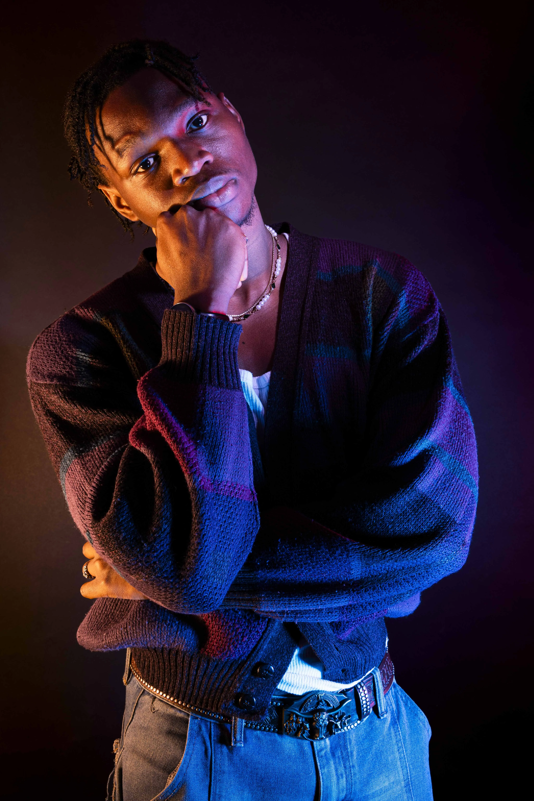
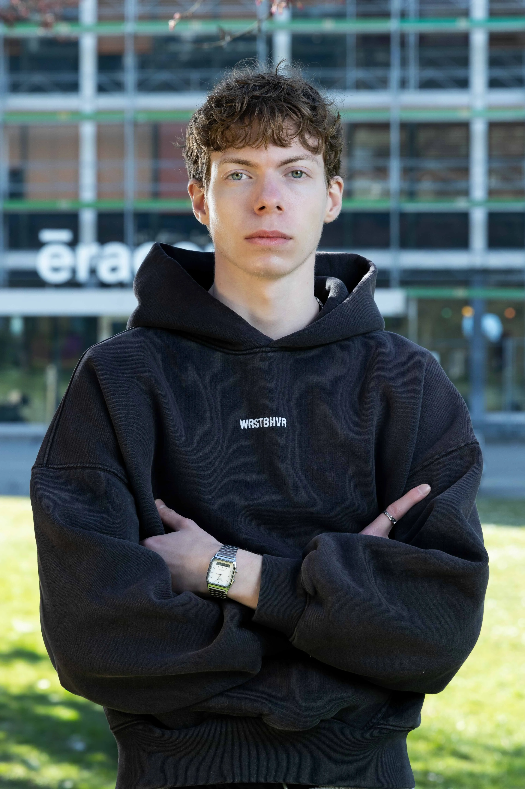
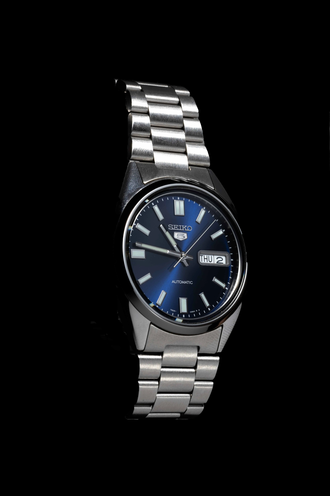
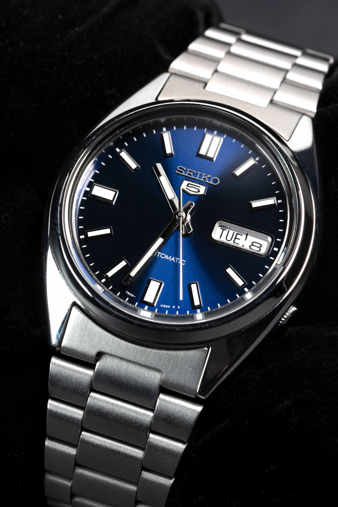
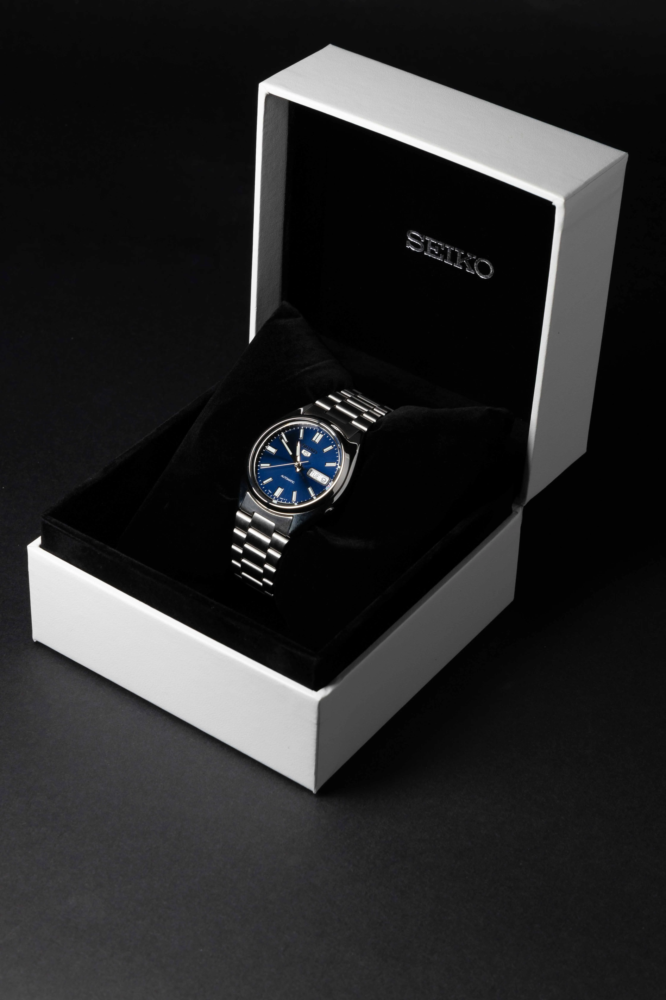

Primal Scream — Stories
A set of promotional Instagram stories for Les Docks Lausanne, announcing the Primal Scream concert. Built in After Effects, with animated typography carrying the message and the motion timed to hold attention in a fast scroll.


Portrait Series
A series built around three shooting techniques: studio portraits lit with coloured light, outdoor portraits shaping natural light with reflectors, and classic white-background headshots for documents and official use.



Seiko: Timepieces
A commercial exercise in macro product work: controlling reflections on the crystal, keeping the metal cold, and retouching to a premium finish.
Circus Coquino
A short documentary with the founder of Circus Coquino on its history, philosophy and training approach. Directed, shot and edited independently.